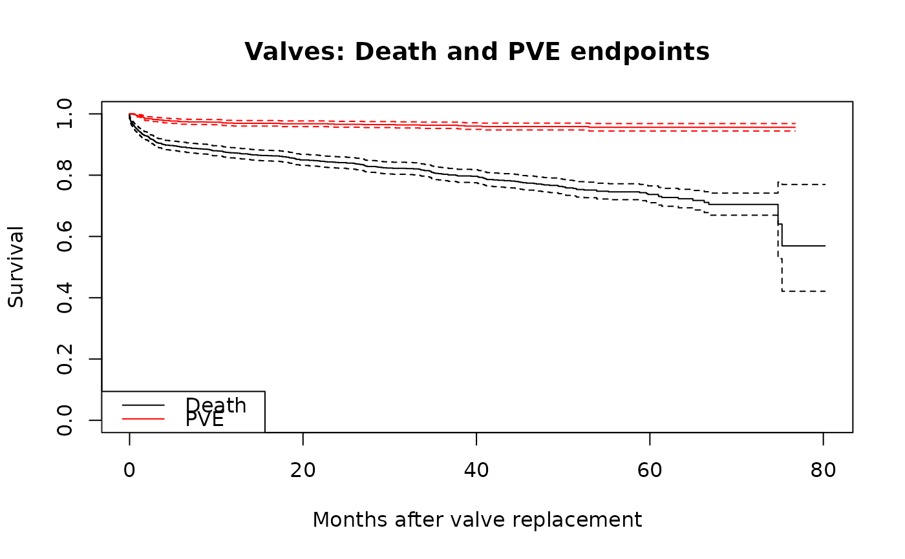

Data for 1,533 patients who underwent primary heart valve replacement. The largest multivariable example dataset with multiple endpoints including death, prosthetic valve endocarditis (PVE), bioprosthesis degeneration, and reoperation.
Format
A data frame with 1533 rows and 19 variables:
- age_cop
Age at operation (years)
- nyha
NYHA functional class (1–4)
- mitral
Mitral valve position indicator (0/1)
- double_
Double valve replacement indicator (0/1)
- ao_pinc
Aortic position, incompetence (0/1)
- black
Black race indicator (0/1)
- i_path
Ischemic pathology indicator (0/1)
- nve
Native valve endocarditis indicator (0/1)
- mechvalv
Mechanical valve indicator (0/1)
- male
Male sex indicator (0/1)
- int_dead
Follow-up interval to death or last contact (months)
- dead
Death indicator (1 = dead, 0 = censored)
- int_pve
Follow-up interval to PVE or last contact (months)
- pve
PVE indicator (1 = PVE, 0 = censored)
- bio
Bioprosthesis indicator (0/1)
- int_rdg
Follow-up interval to degeneration or last contact (months)
- reop_dg
Reoperation for degeneration indicator (0/1)
- int_reop
Follow-up interval to reoperation or last contact (months)
- reop
Reoperation indicator (0/1)
Examples
data(valves)
valves_cc <- na.omit(valves)
# Kaplan-Meier for two endpoints
km_death <- survival::survfit(
survival::Surv(int_dead, dead) ~ 1, data = valves_cc)
km_pve <- survival::survfit(
survival::Surv(int_pve, pve) ~ 1, data = valves_cc)
plot(km_death, xlab = "Months after valve replacement", ylab = "Survival",
main = "Valves: Death and PVE endpoints")
lines(km_pve, col = "red")
legend("bottomleft", c("Death", "PVE"), col = c("black", "red"), lty = 1)
